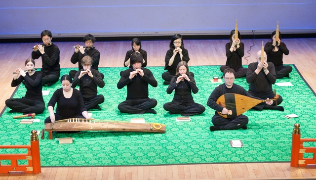
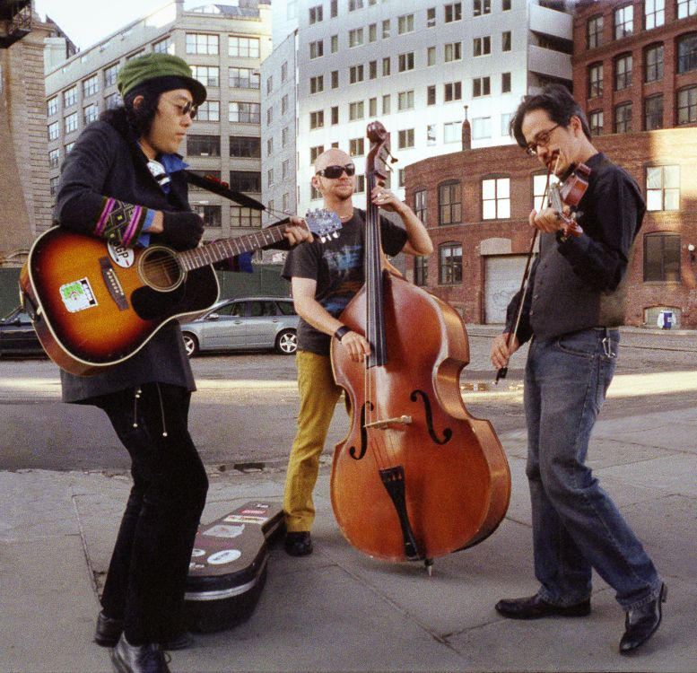
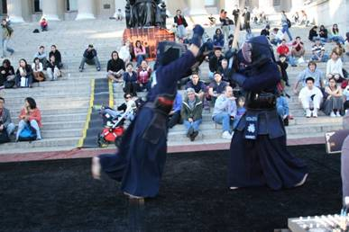
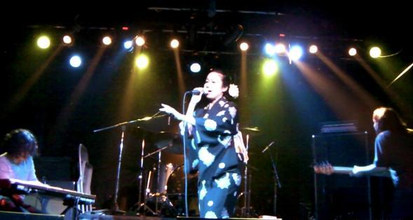
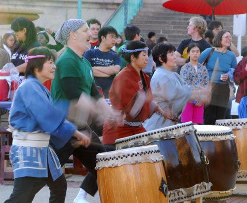
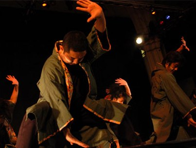

Stage
Andy Suzuki & The Method
Andy Suzuki & The Method are a band on the rise. What started as a half-Japanese/half-Jewish teenager with a smooth hint of R&B in his voice singing along to John Mayer, has evolved into a musical force that is taking the east coast by storm. The band's strong vocal lead, backed by a combination of electric violin, djembe, and piano, pushes the boundaries of acoustic pop - mixing elements of blues, jam-band-style soloing, and piano-rock - all the while reminding audiences that singer-songwriters can be so much more than just starry-eyed crooners.
Check out their official website at http://andysuzukimusic.com.
Gagaku
Gagaku is Japanese court music with a history in Japan of more than 1,300 years. The term Gagaku itself means elegant or ethereal music. The Columbia Gagaku Instrumental Ensemble has laid the groundwork to be the first permanent Gagaku training program outside of Japan. Students also participate in Master Classes with visiting Gagaku musicians from Japan, receiving critical training for the program’s aim to form New York’s first Gagaku ensemble.
For more information, please visit http://medievaljapanesestudies.org/.

Kagero
Kagero's sound is a melting pot of tonalities and rhythms from Asia, the Middle East, South America and Eastern Europe -- "Cultural Confusion". Sometimes the songs are beautiful imagery, sometimes sad folk tales, and sometimes silly songs about drinking. But the tunes are always fun, and the show is high energy dancing good time. "Kagero’s world music goulash is very tasty -- even if you don’t always know what’s you’re eating."
Visit their official website at http://www.kagero.com/kagero.cfm.

Columbia University Kendo
Returning once again to Matsuri, the CU Kendo Club will showcase
some of their best moves and will amaze you with with their cool techniques with their shinai! Watch as they perform their formations and battle each other!

Neo Blues Maki
With a unique contemporary approach to old school Japanese soul music, Neo Blues Maki is a new project launched in 2009. While placing lead vocalist, Kayo's authentic interpretation of enka and 70's Japanese folk/pop music in the center, the band's music personifies atypical progressive arrangements. Combined influences for members of the band reflect neo-soul, R&B, gospel, rock, pop, funk, hip hop, and fusion.
To check them out, visit their myspace page at http://www.myspace.com/neobluesmaki

Columbia University Teacher's College Taiko Society
TAIKO is Japanese drums. Drums have a long and significant history in Japan. Thanks to the Taiko Society
at CU's Teacher's College, you can see first hand the exhiliration of Japanese taiko. Not for the weak of heart...
If you want to learn more, visit their website at http://nytak.blogspot.com/.

10Tecomai
The body goes beyond words.
It is neither a full length novel nor a two hour theatrical play.
All is dedicated in a song that does not even last a mere five minutes.
There, lies an almost tragic, yet passionate expression of emotion.
Japanese culture and hundreds of other cultures
Our project's foundation is created when these meet.
It is based on a traditional yet contemporary dance form called Yosakoi.
While holding a prop called "Naruko" in both hands,
The dancers intensely and dramatically dance as the chanter's cryinstigates the piece.
Various expression is created when all of the above is combined.
"10tecomai", a Yosakoi Dance Project.
This dance won't stop.
This dance can't be stopped.
To find more about 10tecomai visit their webpage at http://www.10tecomai.com/.
